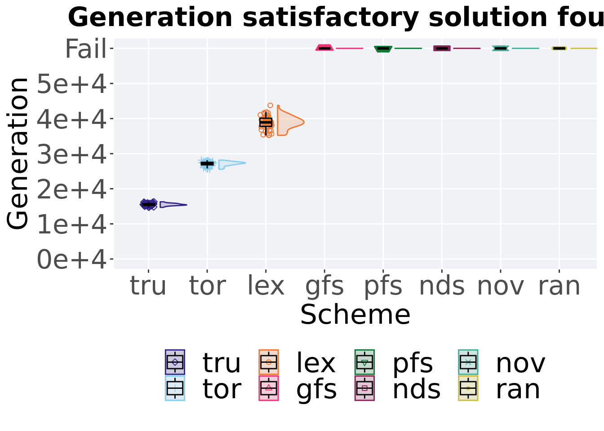

Chapter 3 Ordered exploitation results
Here we present the results for best performances found by each selection scheme replicate on the exploitation rate diagnostic. Best performance found refers to the largest average trait score found in a given population. Note that performance values fall between 0 and 100.
3.2 Setup
These analyses were conducted in the following computing environment:
## _
## platform x86_64-pc-linux-gnu
## arch x86_64
## os linux-gnu
## system x86_64, linux-gnu
## status Patched
## major 4
## minor 2.2
## year 2022
## month 11
## day 10
## svn rev 83330
## language R
## version.string R version 4.2.2 Patched (2022-11-10 r83330)
## nickname Innocent and Trusting3.3 Performance over time
Best performance in a population over time.
ordered_exploitation = filter(cc_over_time, diagnostic == 'ordered_exploitation')
lines = ordered_exploitation %>%
group_by(`Selection\nScheme`, gen) %>%
dplyr::summarise(
min = min(pop_fit_max),
mean = mean(pop_fit_max),
max = max(pop_fit_max)
)## `summarise()` has grouped output by 'Selection Scheme'. You can override using
## the `.groups` argument.points = filter(lines, gen %% 2000 == 0 & gen != 0)
ot = ggplot(lines, aes(x=gen, y=mean / TRAITS, group = `Selection\nScheme`, fill =`Selection\nScheme`, color = `Selection\nScheme`, shape = `Selection\nScheme`)) +
geom_ribbon(aes(ymin = min / TRAITS, ymax = max / TRAITS), alpha = 0.1) +
geom_line(size = 0.5) +
geom_point(data = points, size = 1.5, stroke = 2.0, alpha = 1.0) +
scale_y_continuous(
name="Average trait score",
limits=c(-1, 101),
breaks=seq(0,100, 20),
labels=c("0", "20", "40", "60", "80", "100")
) +
scale_x_continuous(
name="Generations",
limits=c(0, 50000),
breaks=c(0, 10000, 20000, 30000, 40000, 50000),
labels=c("0e+6", "1e+6", "2e+6", "3e+6", "4e+6", "5e+6")
) +
scale_shape_manual(values=SHAPE)+
scale_colour_manual(values = cb_palette) +
scale_fill_manual(values = cb_palette) +
ggtitle("Best performance over time") +
p_theme+
guides(
shape=guide_legend(ncol=2, title.position = "bottom"),
color=guide_legend(ncol=2, title.position = "bottom"),
fill=guide_legend(ncol=2, title.position = "bottom")
) +
theme(
legend.position = "bottom",
legend.box="verticle",
legend.justification="center",
legend.title=element_blank()
)
ot
3.4 Best performance throughout
Best performance throughout 50,000 generations.
plot = filter(cc_best, col == 'pop_fit_max' & diagnostic == 'ordered_exploitation') %>%
ggplot(., aes(x = acron, y = val / TRAITS, color = acron, fill = acron, shape = acron)) +
geom_flat_violin(position = position_nudge(x = .2, y = 0), scale = 'width', alpha = 0.2) +
geom_point(position = position_jitter(width = .1), size = 1.5, alpha = 1.0) +
geom_boxplot(color = 'black', width = .2, outlier.shape = NA, alpha = 0.0) +
scale_y_continuous(
name="Average trait score",
limits=c(-1, 101),
breaks=seq(0,100, 20),
labels=c("0", "20", "40", "60", "80", "100")
) +
scale_x_discrete(
name="Scheme"
)+
scale_shape_manual(values=SHAPE)+
scale_colour_manual(values = cb_palette) +
scale_fill_manual(values = cb_palette) +
p_theme
plot_grid(
plot +
ggtitle("Best performance throughout") +
theme(legend.position="none"),
legend,
nrow=2,
rel_heights = c(2,.55),
label_size = TSIZE
)
3.4.1 Stats
Summary statistics for the performance of the best performance throughout 50,000 generations.
performance = filter(cc_best, col == 'pop_fit_max' & diagnostic == 'ordered_exploitation')
performance$acron = factor(performance$acron, levels = c('tru', 'tor', 'lex','nds', 'gfs', 'pfs', 'nov', 'ran'))
performance%>%
group_by(acron) %>%
dplyr::summarise(
count = n(),
na_cnt = sum(is.na(val)),
min = min(val / TRAITS, na.rm = TRUE),
median = median(val / TRAITS, na.rm = TRUE),
mean = mean(val / TRAITS, na.rm = TRUE),
max = max(val / TRAITS, na.rm = TRUE),
IQR = IQR(val / TRAITS, na.rm = TRUE)
)## # A tibble: 8 x 8
## acron count na_cnt min median mean max IQR
## <fct> <int> <int> <dbl> <dbl> <dbl> <dbl> <dbl>
## 1 tru 50 0 100. 100. 100. 100. 0.00208
## 2 tor 50 0 99.9 99.9 99.9 99.9 0.00445
## 3 lex 50 0 99.8 99.8 99.8 99.8 0.0207
## 4 nds 50 0 23.7 26.0 25.9 27.7 1.17
## 5 gfs 50 0 19.4 21.0 20.9 22.1 0.970
## 6 pfs 50 0 12.5 14.1 13.9 15.1 0.871
## 7 nov 50 0 2.55 3.70 3.80 5.82 0.718
## 8 ran 50 0 0.319 0.598 0.634 1.26 0.240Kruskal–Wallis test provides evidence of statistical differences among best performance found throughout 50,000 generations.
##
## Kruskal-Wallis rank sum test
##
## data: val by acron
## Kruskal-Wallis chi-squared = 392.77, df = 7, p-value < 2.2e-16Results for post-hoc Wilcoxon rank-sum test with a Bonferroni correction on the best performance found throughout 50,000 generations.
pairwise.wilcox.test(x = performance$val, g = performance$acron, p.adjust.method = "bonferroni",
paired = FALSE, conf.int = FALSE, alternative = 'l')##
## Pairwise comparisons using Wilcoxon rank sum test with continuity correction
##
## data: performance$val and performance$acron
##
## tru tor lex nds gfs pfs nov
## tor <2e-16 - - - - - -
## lex <2e-16 <2e-16 - - - - -
## nds <2e-16 <2e-16 <2e-16 - - - -
## gfs <2e-16 <2e-16 <2e-16 <2e-16 - - -
## pfs <2e-16 <2e-16 <2e-16 <2e-16 <2e-16 - -
## nov <2e-16 <2e-16 <2e-16 <2e-16 <2e-16 <2e-16 -
## ran <2e-16 <2e-16 <2e-16 <2e-16 <2e-16 <2e-16 <2e-16
##
## P value adjustment method: bonferroni3.5 Generation satisfactory solution found
First generation a satisfactory solution is found throughout the 50,000 generations.
ssf = filter(cc_ssf, diagnostic == 'ordered_exploitation')
schemes = data.frame()
for (i in 1:8) {
if(i == 3)
{
schemes = rbind(schemes, filter(ssf, acron == ACRON[i]))
next
}
schemes = rbind(schemes, filter(ssf, acron == ACRON[i] & trt == PARAM[i]))
}
plot <- ggplot(schemes, aes(x = acron, y = generation, color = acron, fill = acron, shape = acron)) +
geom_flat_violin(position = position_nudge(x = .2, y = 0), scale = 'width', alpha = 0.2) +
geom_point(position = position_jitter(width = .1), size = 1.5, alpha = 1.0) +
geom_boxplot(color = 'black', width = .2, outlier.shape = NA, alpha = 0.0) +
scale_shape_manual(values=SHAPE)+
scale_y_continuous(
name="Generation",
limits=c(0, 60000),
breaks=c(0, 10000, 20000, 30000, 40000, 50000, 60000),
labels=c("0e+6", "1e+6", "2e+6", "3e+6", "4e+6", "5e+6", "Fail")
) +
scale_x_discrete(
name="Scheme"
) +
scale_colour_manual(values = cb_palette) +
scale_fill_manual(values = cb_palette) +
p_theme
plot_grid(
plot +
ggtitle("Generation satisfactory solution found") +
theme(legend.position="none"),
legend,
nrow=2,
rel_heights = c(2,.55),
label_size = TSIZE
)
3.5.1 Stats
Summary statistics for the first generation a satisfactory solution is found throughout the 50,000 generations.
schemes <- filter(schemes, acron == 'tru' | acron == 'tor' | acron == 'lex')
group_by(schemes, acron) %>%
dplyr::summarise(
count = n(),
na_cnt = sum(is.na(generation)),
min = min(generation, na.rm = TRUE),
median = median(generation, na.rm = TRUE),
mean = mean(generation, na.rm = TRUE),
max = max(generation, na.rm = TRUE),
IQR = IQR(generation, na.rm = TRUE)
)## # A tibble: 3 x 8
## acron count na_cnt min median mean max IQR
## <fct> <int> <int> <dbl> <dbl> <dbl> <dbl> <dbl>
## 1 tru 50 0 14676 15406. 15424. 16175 396.
## 2 tor 50 0 25421 27072. 26970. 28050 528.
## 3 lex 50 0 34842 38440. 38265. 43020 2006.Kruskal–Wallis test provides evidence of difference amoung selection schemes the first generation a satisfactory solution is found throughout the 50,000 generations..
##
## Kruskal-Wallis rank sum test
##
## data: generation by acron
## Kruskal-Wallis chi-squared = 132.45, df = 2, p-value < 2.2e-16Results for post-hoc Wilcoxon rank-sum test with a Bonferroni correction on the first generation a satisfactory solution is found throughout the 50,000 generations.
pairwise.wilcox.test(x = schemes$generation, g = schemes$acron, p.adjust.method = "bonferroni",
paired = FALSE, conf.int = FALSE, alternative = 'g')##
## Pairwise comparisons using Wilcoxon rank sum test with continuity correction
##
## data: schemes$generation and schemes$acron
##
## tru tor
## tor <2e-16 -
## lex <2e-16 <2e-16
##
## P value adjustment method: bonferroni3.6 Streaks
3.6.1 Over time
Best streak in a population over time.
streaks_df = filter(ordered_exploitation, acron == 'pfs' | acron == 'nds' | acron == 'gfs' | acron == 'nov')
streaks_df$`Selection\nScheme` <- factor(streaks_df$`Selection\nScheme`, levels = c('Nondominated Sorting (nds)','Genotypic Fitness Sharing (gfs)','Phenotypic Fitness Sharing (pfs)','Novelty Search (nov)'))
lines = streaks_df %>%
group_by(`Selection\nScheme`, gen) %>%
dplyr::summarise(
min = min(pop_str_max),
mean = mean(pop_str_max),
max = max(pop_str_max)
)## `summarise()` has grouped output by 'Selection Scheme'. You can override using
## the `.groups` argument.points = filter(lines, gen %% 2000 == 0 & gen != 0)
ot = ggplot(lines, aes(x=gen, y=mean, group = `Selection\nScheme`, fill =`Selection\nScheme`, color = `Selection\nScheme`, shape = `Selection\nScheme`)) +
geom_ribbon(aes(ymin = min, ymax = max), alpha = 0.1) +
geom_line(size = 0.5) +
geom_point(data = points, size = 1.5, stroke = 2.0, alpha = 1.0) +
scale_y_continuous(
name="Length",
limits=c(-1, 51),
breaks=seq(0,50, 10),
labels=c("0", "10", "20", "30", "40", "50")
) +
scale_x_continuous(
name="Generations",
limits=c(0, 50000),
breaks=c(0, 10000, 20000, 30000, 40000, 50000),
labels=c("0e+6", "1e+6", "2e+6", "3e+6", "4e+6", "5e+6")
) +
scale_shape_manual(values=SHAPE)+
scale_colour_manual(values = cb_palette) +
scale_fill_manual(values = cb_palette) +
ggtitle("Streak length over time") +
p_theme+
guides(
shape=guide_legend(ncol=2, title.position = "bottom"),
color=guide_legend(ncol=2, title.position = "bottom"),
fill=guide_legend(ncol=2, title.position = "bottom")
) +
theme(
legend.position = "bottom",
legend.box="verticle",
legend.justification="center",
legend.title=element_blank()
)
ot
3.6.2 End of 50,000 generations
Best streak in the population at the end of 50,000 generations.
end <- filter(streaks_df, gen == 50000)
end = filter(end, acron == 'pfs' | acron == 'nds' | acron == 'gfs' | acron == 'nov')
end$acron <- factor(end$acron, levels = c('nds','gfs','pfs','nov'))
plot = ggplot(end, aes(x = acron, y = pop_str_max, color = acron, fill = acron, shape = acron)) +
geom_flat_violin(position = position_nudge(x = .2, y = 0), scale = 'width', alpha = 0.2) +
geom_point(position = position_jitter(width = .1), size = 1.5, alpha = 1.0) +
geom_boxplot(color = 'black', width = .2, outlier.shape = NA, alpha = 0.0) +
scale_y_continuous(
name="Length",
limits=c(-1, 51),
breaks=seq(0,50, 10),
labels=c("0", "10", "20", "30", "40", "50")
) +
scale_x_discrete(
name="Scheme"
)+
scale_shape_manual(values=SHAPE)+
scale_colour_manual(values = cb_palette) +
scale_fill_manual(values = cb_palette) +
coord_flip()+
p_theme
plot_grid(
plot +
ggtitle("Final streak length") +
theme(legend.position="none"),
legend,
nrow=2,
rel_heights = c(2,.55),
label_size = TSIZE
)
3.6.2.1 Stats
Summary statistics for best streak in the population at the end of 50,000 generations.
group_by(end, acron) %>%
dplyr::summarise(
count = n(),
na_cnt = sum(is.na(pop_str_max)),
min = min(pop_str_max, na.rm = TRUE),
median = median(pop_str_max, na.rm = TRUE),
mean = mean(pop_str_max, na.rm = TRUE),
max = max(pop_str_max, na.rm = TRUE),
IQR = IQR(pop_str_max, na.rm = TRUE)
)## # A tibble: 4 x 8
## acron count na_cnt min median mean max IQR
## <fct> <int> <int> <int> <dbl> <dbl> <int> <dbl>
## 1 nds 50 0 32 37 36.5 41 3
## 2 gfs 50 0 26 32 32.3 37 2.75
## 3 pfs 50 0 18 24.5 24.5 30 4.5
## 4 nov 50 0 9 15 14.7 18 2Kruskal–Wallis test provides evidence of difference among best performance in the population at the end of 50,000 generations.
##
## Kruskal-Wallis rank sum test
##
## data: pop_str_max by acron
## Kruskal-Wallis chi-squared = 178.91, df = 3, p-value < 2.2e-16Results for post-hoc Wilcoxon rank-sum test with a Bonferroni correction on best performance in the population at the end of 50,000 generations.
pairwise.wilcox.test(x = end$pop_str_max, g = end$acron, p.adjust.method = "bonferroni",
paired = FALSE, conf.int = FALSE, alternative = 'l')##
## Pairwise comparisons using Wilcoxon rank sum test with continuity correction
##
## data: end$pop_str_max and end$acron
##
## nds gfs pfs
## gfs 2e-11 - -
## pfs <2e-16 <2e-16 -
## nov <2e-16 <2e-16 <2e-16
##
## P value adjustment method: bonferroni